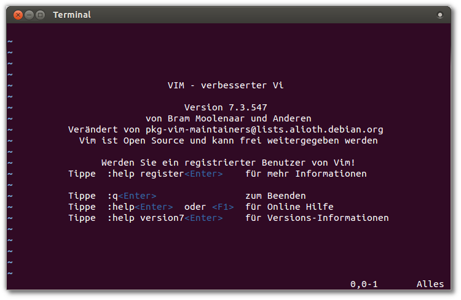

Einleitung
Vi ist das Urgestein der Texteditoren (auf Konsolen). Es stammt aus den 1970er Jahren und ist auf fast allen Unix-/Linux-Systemen installiert. Mittlerweile handelt es sich dabei zumeist um eine weiterentwickelte Version, z.B. vim (vi improved). Vim kommt hauptsächlich bei Systemadministratoren zum Einsatz.
Das Programm scheint auf der ersten Blick sehr kompliziert. Daher ist das Ziel dieses WebQuests, sich mit den verschiedenen Betriebsmodi und den wichtigsten Befehlen des Editors vertraut zu machen. Sie werden die praktischen Funktionen und die Vorteile gegenüber anderen (einfacheren) Editoren kennen lernen.